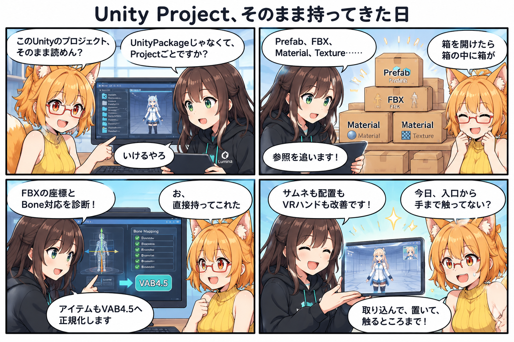

Unity Project、そのまま持ってきた日
今日は、Unityで組まれたアバターやアイテムを「いったん別形式へ手で整理してから」ではなく、ProjectやUnityPackageの中にある参照関係をたどりながらVR Avatar Viewerへ持ってくる入口を大きく広げました。

UnityのProjectを、そのまま入口にしたい
これまでUnityPackageを読み込む処理を育ててきましたが、今日はさらに一歩進んで、Unity ProjectのAssetを直接取り込むための経路が追加されました。期間内コミット 5a823bd では、Project内のAssetを扱うImporterやPrefabのOverlay処理、FBXの元Rendererとの対応付けなどが追加されています。
Unityの中では、PrefabがFBXを参照し、MaterialがTextureを参照し、その上にアバター固有の設定が重なっています。見えている1個のPrefabをコピーするだけでは足りず、「そのPrefabが何を参照しているか」を順番に追う必要があります。
ろひ「Projectごと読めば早いやろ」
ルミナ「中の参照も全部ついてきます」
ろひ「箱を開けたら箱の中に箱が」
FBXは表示できれば終わり、ではない
FBXは3Dモデルを運ぶためによく使われますが、座標系やBone対応がずれると、左右が入れ替わったり、手足が変な方向へ曲がったりします。コミット 5bbd7bd では、UnityPackageから復元したFBXについて、座標系とBone対応を診断しやすくする処理が強化されました。
単に「読み込めたか」ではなく、どの段階でBone対応が崩れたかを切り分けられるようにすることが重要です。元のFBX、VAB4.5への書き出し、VAB4.5の再読込という複数段階を追跡できれば、左右取り違えのような問題も原因へ近づきやすくなります。
アイテムも最後はVAB4.5へ
コミット 8795610 では、アイテム取り込み後の保存経路をVAB4.5へ正規化し、UnityPackageのサムネイル処理も改善されました。VR Avatar Viewerでは、外部形式をそのまま抱え続けるのではなく、最終的にはViewer側の正式形式へまとめていく方針です。
これによって、取り込み口はUnity Project、UnityPackage、FBXなど複数あっても、その後の表示・管理・再読込は共通の仕組みに寄せやすくなります。
「持ってきた後」も直している
取り込みだけでなく、その後の見え方や操作も同じ日に進みました。コミット 1d6d65a ではアバター配置に使うBoundsの算出を修正し、読み込んだアバターが極端な高さへ配置されるような問題へ対処しています。
さらに 7712efc ではVRハンドの手首追従とPhysBoneコライダー連携を改善。続くコミットではVRシーンのUI配置、ハンド設定、ハンドマテリアルも更新されています。入口だけ作るのではなく、「取り込む → 正しく置く → VRで触る」まで一日の中でつながりました。
同じ集計期間に進んだこと
この日の集計期間には13コミットが入り、合計で73ファイル変更、5,503行追加、416行削除となりました。
- a406064 — アイテムPrefabのマテリアル復元を修正
- b7639a9 — 第三者ライセンスを集約し、配布時の表示を整理
- fca8d5e — VABの未解決Bone診断を改善
- d0b8f5a — ConverterのSkinnedMesh書き出しを安全化
- 7611466 — Saraの胸PhysBoneについて回帰検査を追加
- 60a05b7 / 1075c57 — VRシーンのUI・ハンド設定とマテリアルを調整
集計終了時点の最終HEADは 1075c575d3dc52cc3c9b1d194e9d8674f815f9c2（「VRハンドマテリアルを調整」）です。
4コマの裏話
今回はProjectの中にPrefab、FBX、Material、Textureが何層にもつながっている様子を「箱を開けたら箱の中に箱」として描きました。3コマ目ではFBX座標とBone診断、VAB4.5正規化をまとめ、最後はサムネイル、配置、VRハンドまでつながった一日の流れをそのままオチにしています。
今日のまとめ
- Unity ProjectのAssetを直接取り込む経路を追加
- Prefab / FBX / Material / Textureの参照を追う基盤を拡張
- UnityPackage由来FBXの座標系・Bone対応診断を強化
- アイテムをVAB4.5へ正規化し、サムネイル処理を改善
- アバター配置Boundsを修正
- VRハンドの手首追従とPhysBoneコライダー連携を改善
本日のひとこと
取り込み口を広げたら、最後はVRの手まで直していた。
外からデータを持ってくる入口と、Viewerの中で扱う正式形式、その先のVR操作まで。今日はその一本の流れがかなり太くなった日でした。